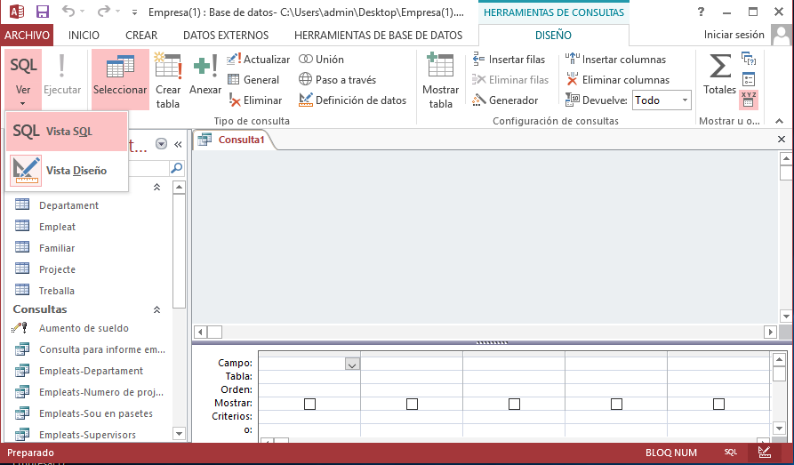
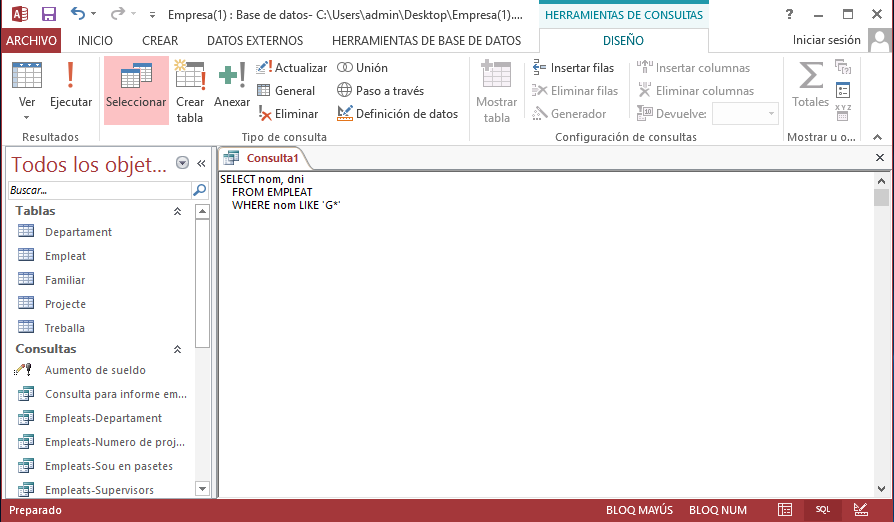
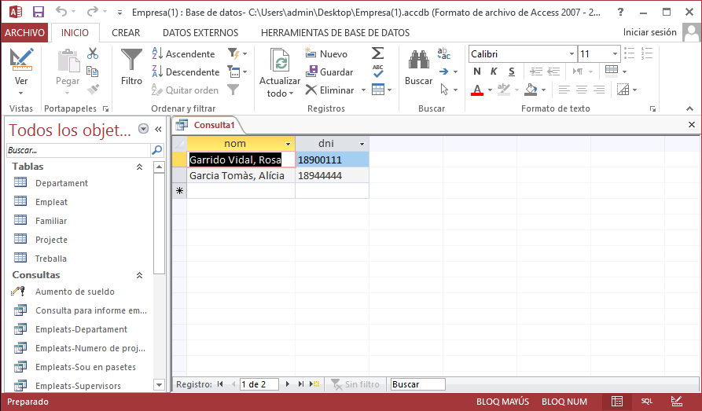

1. Introducció
SQL és un llenguatge per a organitzar, gestionar i recuperar dades emmagatzemades en una Base de Dades. El nom "SQL" és una abreviatura de Structured Query Language (Llenguatge Estructurat de Consultes), i com el seu nom indica, és un llenguatge informàtic que es pot utilitzar per a interaccions amb una Base de Dades de tipus relacional.
SQL s'utilitza per a controlar totes les funcions que un SGBD proporciona als seus usuaris, incloent:
-
Definició de dades. SQL permet a un usuari definir l'estructura i organització de les dades emmagatzemades i les relacions existents entre elles (claus externes).
-
Recuperació de dades. SQL permet a un usuari o a un programa d'aplicació recuperar les dades emmagatzemades de la base de dades i utilitzar-les.
-
Manipulació de dades. SQL permet a un usuari o a un programa d'aplicació actualitzar la base de dades afegint noves dades, suprimint dades antigues i modificant dades prèviament emmagatzemades.
-
Control d'accés. SQL pot ser utilitzat per a restringir la capacitat d'un usuari per a recuperar, afegir i modificar dades, protegint així les dades guardades davant d'accessos no autoritzats.
-
Compartició de dades. SQL s'utilitza per a coordinar la compartició de dades per part d'usuaris concurrents, assegurant que no interfereixen entre ells.
-
Integritat de dades. SQL defineix restriccions d'integritat en la base de dades, protegint-la contra corrupcions causades per actualitzacions inconsistents o per fallades del sistema.
SQL no és realment un llenguatge informàtic complet tal com JAVA, C o Python. SQL no disposa de la sentència IF per a examinar condicions, ni de les sentències WHILE o FOR per a fer bucles, per exemple. En compte d'això, SQL és un subllenguatge de base de dades, que consta d'unes trenta sentències especialitzades per a tasques de gestió de bases de dades, però només 7 són les sentències principals.
També es diu que és un llenguatge de quarta generació perquè en ell es diu quina informació es vol, sense especificar exactament com s'aconsegueix aquesta informació.
També es diu que és un llenguatge orientat a conjunt de registres , ja que una sentència pot tornar un conjunt de registres. Açò és un gran avantatge amb els llenguatges de tercera generació, que només podien treballar registre a registre.
Dues són les maneres d'executar sentències SQL.
- De forma interactiva : s'escriu una sentència SQL, i s'executa, tornant normalment un conjunt de registres que es presentaran en forma tabular. En Access el lloc on procedir d'aquesta manera és en les consultes , triant Vista SQL. Tindrem lloc per escriure la sentència tal i com es mostra en la primera imatge. En la segona imatge, es mostra una consulta ja feta en el tema anterior, però veient-la en SQL. En la tercera hem executat la consulta:
|  |  |  |
|---|---|---|
- Dins d'un programa escrit en un altre llenguatge, que actuarà com llenguatge amfitrió (i el SQL seria el llenguatge host, "huesped "). En el cas de Access podríem incloure sentències SQL en Visual Basic. D'aquesta manera s'estén el llenguatge amfitrió i li permet accedir a la Base de Dades.
SQL és el llenguatge estàndard d'accés i manipulació de Bases de Dades dels Sistemes Gestors de Bases de Dades Relacionals. A tots, absolutament a tots els SGBD Relacionales comercials es pot accedir per SQL.
DDL, DQL i DML
Com s'ha comentat en la pregunta anterior, SQL ens permet definir, controlar i accedir a una Base de Dades.
Farem una distinció principal entre aquestes funcions, separant el que són les estructures de les taules i el contingut de les taules. En aquest sentit tindrem 3 subtipus de llenguatges:
- DDL (Data Definition Language o Llenguatge de Definició de Dades): permet definir, modificar o esborrar les estructures, com poden ser taules, vistes, índex, ... i fins i tot Bases de Dades. Bàsicament les sentències són 3:
| CREATE | per a crear l'estructura |
| ALTER | per a modificar-la |
| DROP | per a esborrar-la |
- DQL (Data Query Language o Llenguatge de Consulta de Dades): permet consultar dades d'una base de dades.
| SELECT | per a consultar dades |
|---|---|
- DML (Data Manipulation Language o Llenguatge de Manipulació de Dades): permet accedir al contingut de les estructures, a les dades. Aquest accés pot ser de dos tipus: per a consultar o per a modificar les dades
| INSERT | insereix noves files |
| UPDATE | modifica el contingut de files ja existents |
| DELETE | esborra files |
El llenguatge SQL és més extens que les sentències anteriors, incorporant també el que s'anomena DCL (Data Control Language o Llenguatge de Control de Dades), que permet controlar les dades per a donar permisos o llevar-los sobre les dades, o controlar les transaccions, ..., però de moment ens aconformarem amb les sentències de DML i DDL, i aquestes últimes, sobretot, per a definir taules.
Llicenciat sota la Llicència Creative Commons Reconeixement NoComercial CompartirIgual 3.0